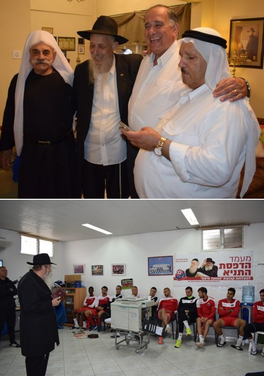

A Fearless Shliach Who Turned Dreams into Reality
He was a talented administrator who helped found an educational empire. At the same time, he was a dreamer who worked to realize his dreams. It was a rare combination in the personage of Rabbi Boaz Kali a”h. * R’ Boaz is known for two things: chinuch and instilling the Seven Noahide Laws among the nations. * Nobody could resist his perpetual smile, not his friends and Chassidim, nor the Druze to whom he went with the message, and not even the bank manager who paid a Shiva call to his family.

R’ Diskin was taken aback. As a member of the administration of the mosdos, he knew the situation good and well: tremendous financial problems and huge debts. The chief administrator, Rabbi Schildkraut, was at this very time forced to spend a long time abroad raising funds. Salaries were many months behind and the learning took place in cellars and other unsuitable places. And that wasn’t all.
“Out of pity, I cooperated,” said R’ Diskin, when he went to console the Kali family. “We sat and brainstormed his delusions as though they were reality. Needless to say, every one of his dreams came true, one by one. Proof is the magnificent ‘Kiryat Chinuch’ educational campus today in Kiryat Shmuel, which is a model of a beautiful school that provides the best Chassidic education to the residents of Chaifa and the Krayot.
That was R’ Boaz Kali. A Chassid who always wore a Moshiach flag in his lapel, had a winning smile, always wore a sirtuk with his shirt out that gave the erroneous impression that this was a sloppy fellow. He was actually a loyal soldier in the Rebbe’s army, sharp and focused, who dared to dream and furthermore, dared to realize his dreams, giving nachas to the Rebbe MH”M.
PERSONAL MIRACLE
R’ Boaz Kali was born on 7 Sivan 5710/1950 to R’ Yaakov Aryeh and Tzippora Klosky (later Kali), founders of the religious kibbutz Tirat Tzvi, in the Beit Shaan Valley. R’ Boaz said that his father came from a family of Amshinover Chassidim but learned in Novardok, a musar-oriented yeshiva. “There was a ‘question’ whether my father was Chassidish or Litvish. But when I saw my father on Simchas Torah saying lots of l’chaims and giving out l’chaim in the shul in Tirat Tzvi to everyone there, dancing and roping in everyone along the pathways of the kibbutz, I knew he was a Chassid.”
R’ Boaz grew up in a “knitted yarmulke” atmosphere. In 5731 he married his wife Chedva and the couple settled in Kiryat Shmuel.
They had no children for eight years. Doctors they consulted with said it was hopeless. They felt tremendous pressure from friends who already had children and they began considering adopting.
Then, R’ Boaz made the acquaintance of Rabbi Yigal Pizem and began attending the shiurim R’ Pizem gave in Likkutei Sichos and the teachings of Chassidus. When he shared his personal sorrow with R’ Pizem, the latter asked him, “Why don’t you write to the Rebbe and ask for a bracha for children?”
R’ Boaz initially hesitated but finally sent off a letter. That very month the couple experienced the miracle. When R’ Boaz asked R’ Pizem why the Rebbe did not respond to his letter, R’ Pizem said, “The Rebbe answered you in real life.”
Nine months later, their oldest son was born. They wanted to name him for R’ Boaz’s brother who was killed in the Six Day War, but some expressed reservations because he died young. When he asked the Rebbe, he received the response, “Do as per the advice of G-d fearing people in the family.” He ended up naming the baby Meir Binyamin (who is a shliach today in Ramat Gan).
Three years later, on Chanuka 5742, parents and baby went to thank the Rebbe in person. They had a “general-personal” yechidus in the course of which the Rebbe asked the child whether he had a letter in the Torah of Jewish children. When he said he did, the Rebbe looked pleased.
FIRST PUSH
At that time, R’ Boaz was not yet a Lubavitcher Chassid. He felt he belonged with the knitted kippot kibbutz population. He worked at Katz’s carpentry (which later turned into the Beis Chaya school and later still, Tomchei T’mimim).
The mashpia, R’ Reuven Dunin, went to R’ Yitzchok Goldberg of Migdal HaEmek and told him that he was impressed with a group of young, quality guys in the Krayot. In this group were R’ Boaz Kali, R’ Yisroel David, R’ Ami Weiss, and others. R’ Goldberg started learning Gemara and Chassidus with them. The connection with R’ Reuven Dunin in Chaifa also became warmer.
One day, they were sitting with R’ Reuven when he stood up and said, “A Chassid and baal mesirus nefesh recently arrived from Soviet Russia. He is coming to farbreng in Migdal HaEmek. Let’s go.” He was referring to R’ Mendel Futerfas. The chevra got up and went, without stopping to tell their wives.
In the era before cell phones, their wives didn’t know to where they had disappeared. At a certain point, when they were worried, they called one another and discovered that all their husbands had vanished and that reassured them.
They went to Migdal HaEmek where R’ Mendel was farbrenging. At some point, R’ Mendel “went to work” on R’ Boaz and said in his familiar tone, “Go to the Rebbe.” That was what motivated him to go for the first time, with his wife and son, to thank the Rebbe for the baby.
R’ Boaz later closed the carpentry shop and opened a furniture store. The activist bug began to take root inside him and it wasn’t long before his store became a semi Chabad House. People went to him to write to the Rebbe and along with selling furniture, his store also held shiurim. He also gave his car to activists for outreach purposes.
R’ Boaz soon felt no longer interested in tables and chairs. At that time, the Rebbe began talking a lot about spreading the wellsprings and shlichus. R’ Boaz closed his store and began spreading the wellsprings.
Every so often, he would go to kibbutz Tirat Tzvi to visit his parents. He used these visits to reach out to children on the kibbutz through a Tzivos Hashem club that he started. He encouraged children to put a pushka and s’farim in their bedrooms. At one of the meetings of kibbutz members, the official decision was: they were happy that R’ Boaz came to visit his parents, but he was no longer welcome to bring new ideas into the kibbutz.
In general, R’ Boaz was gifted with a holy stubbornness; it was stubbornness with a perpetual smile. He was a bulldozer in his very soul and could not rest on his laurels. But whatever he did, he did with a pleasant demeanor.
STEERING THROUGH CHOPPY WATERS
In 5743, R’ Boaz began running the Chabad schools in Krayot that provided a Chassidishe education to the children of Anash in Chaifa and the Krayot. These schools were just beginning and consisted of a few classes that had few children, a preschool, and that’s all.
Over the years, the schools grew. Another class was added and another. Another preschool and another school. It was the early days and there were tremendous difficulties.
R’ Boaz joined R’ Leibel Schildkraut who ran the schools. In the years that followed, the schools grew, as did the financial woes and debts. The hanhala tried to survive. The situation continued until they could not go on. R’ Schildkraut went abroad to fundraise while R’ Boaz remained to navigate the rickety ship in a stormy sea that threatened to sink it. The schools nearly fell apart and R’ Boaz had to contend with tremendous financial guarantees that he had signed to. More than once, debt-collectors went to his house to impound what did not exist.
R’ Boaz said that in one of his conversations with R’ Leibel they concluded that in the past, mesirus nefesh was to fulfill Torah and mitzvos and today, mesirus nefesh has to do with money matters.
The manager of the bank where they had an account said during the Shiva that he loved R’ Boaz. “He would come with his requests and it was hard to turn him down. Sometimes, I had to struggle to say no but R’ Boaz did not get upset; he accepted it with good will and understanding.”
The night of Tisha B’Av 5751, there was an emergency meeting of askanim in R’ Diskin’s house. The fact that the meeting took place the night of Tisha B’Av, as they all sat on the floor, tells you how dire the situation was.
They discussed how there was no choice and they had to close some of the schools while spinning off others in order to save what remained. They had almost accepted this decision when R’ Boaz got up and said, no way! “No mosad of the Rebbe will be closed,” he announced determinedly. “We are moving onward.” His determination and emuna convinced them all and his view was accepted.
R’ Boaz went to the Rebbe for Sukkos and Simchas Torah. In the course of his stay, he went on line for dollars, lekach and kos shel bracha. He did not want to bother the Rebbe with material requests, but needed encouragement in light of the difficult situation. The day before he returned home, as he stood behind the Rebbe, the Rebbe suddenly turned around to him and vigorously encouraged him with both his hands.
TURNING A DREAM INTO REALITY
Then, in the midst of all the pressure, R’ Boaz came up with the idea of founding a Kiryat Chinuch. He personally paid for a renowned architect who came up with a grandiose plan for an educational campus. It even had a name, “Kiryat Melech.”
He had his eye on a piece of property that had been an abandoned British military camp inside the triangle of three cities, Chaifa, Kiryat Bialik and Kiryat Yam. He went to the mayor of Chaifa, Aryeh Gurel and asked for his cooperation, but the mayor refused.
Then Amram Mitzna became mayor and R’ Boaz made an appointment with him to discuss his dreams. Mitzna’s response to R’ Boaz’s grand plans was, “I want to see where the children are learning now.”
R’ Avi Kali, his son, recalls, “At the time, we were learning in boiling hot trailers and bomb shelters, under difficult conditions.” Mitzna saw this and was taken aback. He said, “I may not be Chabad, but the children don’t have to suffer,” and he gave the green light to start working on the plans.
It wasn’t a simple project since the abandoned military camp bordered three cities. R’ Boaz managed to convince all three mayors to designate part of the land for the educational campus.
Although there were financial problems that threatened to topple the schools, R’ Boaz continued to forge ahead. Together with members of the administration, he visited various schools around the country to find inspiration for his future plans. “We thought he was just making us crazy,” said one of the members of the hanhala to Beis Moshiach. “I went around with him but didn’t think anything would come of it. I sat with him out of pity.” But R’ Boaz already had come up with a slogan for the project, “Turning a dream into reality.”
As mentioned at the beginning of the article, R’ Diskin remembers how R’ Boaz came to him even before he got the necessary permits for the land or money and asked for his help in drawing up the general outline for the campus. “I sat with him out of pity,” he says.
R’ Boaz harnessed his love for the Rebbe toward the building of the mosdos. He made sure that each of the buildings would be topped by three red triangles, reminiscent of 770.
Whoever passes by the educational campus today cannot help but be amazed by the chain of schools that contain more than 1000 children. The schools are a model of how a school should look, beautiful and spacious with an uncompromising high-level of professionalism. The schools consist of a network of daycare centers, preschools, an elementary school for boys and one for girls, Beis Chaya high school and more.
“All his dreams came true,” says R’ Diskin. “We have a campus on twenty dunam (close to five acres) of land and it’s all because R’ Boaz dreamed and got us all caught up in his dreams.”
SEVEN NOAHIDE LAWS
Someone once suggested to him that he enjoy the air conditioning in the administrator’s office and reap the fruits of his efforts. R’ Boaz just smiled. To him, there was no such thing as rest. His next project was instilling the Seven Noahide Laws among the nations of the world.
It began unexpectedly, as a result of a comment he got from his aunt who challenged him, “Only the Jews are worth something and goyim are nothing?!” R’ Boaz told her that goyim also have a purpose in fulfilling their seven mitzvos.
“You’re just saying that; you aren’t really doing anything toward this end,” she rejoined. And this motivated R’ Boaz to look into the matter.
He opened the Rebbe’s sichos and saw that the Rebbe often urged us to bring awareness of this to the nations of the world and how this is part of preparing for the arrival of Moshiach.
R’ Boaz was thorough. He sat with shluchim who were already involved in this in order to study the details. He consulted with rabbanei Anash while studying the Rebbe’s sichos in depth. He even produced a CD with the Rebbe’s sichos on the subject.
He began with well organized activities with the goal of reaching Druze and Cherkassy villages and Arab cities in Eretz Yisroel. The point was to bring them the Besuras Ha’Geula and the idea of the seven mitzvos. “He believed that if the Rebbe says we need to influence the nations about this, then it’s possible,” said his friend, the mashpia, R’ Elozor Kenig. R’ Boaz often quoted the Rebbe about how the Rambam brings the laws of the seven mitzvos before the laws of Moshiach, because it is part of Moshiach’s role in preparing and rectifying the world for the Geula.
The idea was bizarre to anyone he shared it with. He heard “It won’t be accepted,” “It’s delusional,” and other similar reactions. But R’ Boaz was able to dream and bring dreams to reality and he believed with all his heart that this was vital at this time.
Rabbi Yosef Yashar, rav of Akko said that he felt “obligated” to the Rebbe thanks to a “miracle” the Rebbe did for him. When R’ Boaz went to him with a request that he help him meet the sheikhs in Akko, he did not want to get involved because he did not believe it was possible. But out of gratitude he felt he could not say no and helped R’ Boaz make his initial contacts with the sheikhs.
“As time went on, I was amazed to see how every time, they welcomed R’ Boaz with great honor, not just out of politeness; it was astonishing,” said R’ Yashar.
Over the years, R’ Boaz initiated a long string of activities to spread belief in one G-d among the nations of the world. He initiated countless meetings, workshops and lectures with Druze, Arab and Cherkassy residents, he began writing a “code of law” on the Seven Noahide Laws, did projects with youth along with offering grants and much more. The pinnacle of his activities was a translation of parts of Tanya into Arabic. He even traveled to Turkey to meet with the leaders of the Syrian rebels.
His friend, R’ Kenig, characterizes his success, “R’ Boaz believed with simple faith and willpower in everything he did. He had a holy stubbornness and had no doubt that he would achieve what he wanted, even things that seemed unrealistic. He had a special warmth that you could not resist. Even goyim felt that this man was unusual and they joined him and his initiatives. He gave them the feeling that he was offering them something positive. This is why all the Arab villages welcomed him with great honor and open displays of friendship.”
Rabbi Yoel Shemtov, a chaplain in the Border Guard Northern Command, said that many Druze serve in his district. Once, a Druze policeman was killed and he went to the parents’ house to console them. As they spoke, he brought up the topic of the seven mitzvos. He mentioned the Rebbe and said, “You surely don’t know who the Lubavitcher Rebbe is …”
They were offended! “The Lubavitcher Rebbe is Melech HaMoshiach,” they said. He quickly realized that R’ Boaz Kali had already prepared them for the Geula; they were well informed.
R’ Boaz bought a shul in the German Colony in Chaifa and turned it into a Sheva Mitzvos center. He dreamed of a center for the many tourists who visited Chaifa. He also planned an Igros Kodesh center for the Arabs of Chaifa.
Not surprisingly, some sheikhs attended his funeral.
LOYAL SOLDIER IN THE REBBE’S ARMY
“L’Havi l’Yemos HaMoshiach” was R’ Boaz’s motto. Every meeting, whether it was in the schools or in the Chaifa municipality or any occasion, he began with an idea from a sicha of the Rebbe. Then he would ask the people sitting there what they did and how he could help them, and only then did the meeting begin.
R’ Boaz saw himself as a shliach in every aspect of spreading Judaism. Wherever he was invited to speak or farbreng, he went. He was invited by a senior employee in the local electric company to farbreng with the employees, as well as in the workers’ recreation area at the Nesher company. They always listened closely to what he said and he was mekarev many to Judaism.
His son says that once, his father attended a lecture on how to raise funds. The lecturer asked the participants to recount a mistake they made while fundraising. R’ Boaz said that just that day he had farbrenged with employees of a respected firm in honor of a Chabad significant date and he drank more mashke than he should have. The lecturer heard this and was mortified; he had never heard of such a terrible error. But when he heard the results of this “error,” he couldn’t help but smile. R’ Boaz with his mashke had won everyone over, put tefillin on with some of them, and most of them stayed way longer than the designated time. The donations he got thanks to that farbrengen were beyond the amount he had anticipated.
His son-in-law, R’ Shmuel Goldfarb, related:
“During the Second Lebanon War, I went on mivtzaim with him to an army base to encourage the soldiers and put tefillin on with them. My father-in-law did not hesitate, even though Katyushas kept flying and the explosions were deafening and terrifying. He was calm and tried to distract me by saying, ‘Don’t worry, they’re just outgoing,’ meaning, they were coming from our soldiers and not being shot at us.
“A Katyusha fell right near us and there was a mighty explosion. He remained calm and repeated what the Rebbe Rayatz said, ‘Every bullet has an address.’
“It was mid-summer and very hot and we went around from morning till night. At 11 at night, I was falling off my feet and then he said to me with a smile, ‘Shmuel, do you have more strength? There is another unit that is about to enter Lebanon and we need to cheer them up.’”
Along with his perpetual smile, he knew how to stand up for his beliefs without fearing anyone. His son-in-law says that after R’ Boaz bought the shul in the German Colony, he noticed some German writing etched into the wall at the entrance to the shul. He asked a German tour guide to tell him what it said. The guide said it was a quote from the New Testament. R’ Boaz said it was forbidden to have this on a shul and since it was an old landmark building that needed to be preserved by law, he brought an engraver to change the writing to Shema Yisroel.
A neighbor, a Christian Arab, saw the engraver removing the New Testament quote and he began screaming that it was an old landmark and he would call the police. The engraver was afraid. R’ Boaz appeared and although he never raised his voice, he firmly told the neighbor, “This is our shul, a shul for Jews, and this writing will not remain here. You can go to whoever you want, just remember that there is no hope for informers.” He then slammed the door.
A half hour later, the Arab neighbor returned with a bouquet of flowers. He gave them to the engraver and asked him to deliver them to the rabbi “so the rabbi forgives me and does not curse me.”
“Despite his warm nature, he wasn’t afraid and stood up for what was right,” concluded the son-in-law.
***
R’ Boaz was careful with halacha and custom. In the last period of his life, when he was fighting for his life, his son-in-law showed up one Friday with cooked food. R’ Boaz asked what it was and he said chicken and rice.
“I’ll just eat the chicken,” said R’ Boaz.
“Why not the rice?”
“Because it says in halacha that because of a doubt about the bracha on rice, it should be eaten with a meal (at which bread was eaten).”
“So, wash your hands and eat,” said his son-in-law.
“It’s Friday afternoon and we can’t wash now.”
Another time, when he was only eating soft foods, they brought him cheese with a good hechsher but it wasn’t a hechsher that he used, so he wouldn’t eat it.
THE FINAL TEST
His terrible illness was discovered eight years ago. In an interview he gave with Beis Moshiach a year ago he said, “I began having symptoms that worried me. I went to Rambam hospital in Haifa to check them out. When the results came in, the doctor had me come to his office where he told me I have a tumor in the large intestine and unfortunately it is malignant.
“I was shocked. I don’t want to use the expression ‘my world collapsed on me,’ but news like that is not received with equanimity.
“I went home and the first thing I did was write to the Rebbe. I opened to powerful, encouraging answers full of brachos. After that, it was easier to tell the news to my family.”
He started chemotherapy, “And I decided that the illness would not affect my daily life and activities. I made the effort to carry on my work and to my joy, the side effects were not terrible and the treatment did not affect my regular workload. After a year of chemotherapy treatment, I was told that the many prayers had been effective and the tumor had disappeared.
“A year went by without any sign of illness and then I began feeling symptoms again. My kidneys did not work as they should. I went for an exam and a small miracle occurred, which I saw as a sign from Above. I got an appointment for a month away but felt that I could not wait so long. I pressured the secretary and brought various medical documents, but she said she had no available appointment any earlier. A few minutes later, she called back to say that something had just become available and she gave me an appointment for a few days later.
“I went to the doctor who said I should be hospitalized immediately. I told him that I originally had an appointment for a month later. He said, ‘If you waited a month, I would not have anyone to treat.’
“I was hospitalized and once again received encouraging signs from Above. This was before Pesach. I wrote to the Rebbe and opened to a very encouraging answer. In a long and fascinating letter, the Rebbe explains the concept of divine providence, explaining the parable about the simple villager who goes to an operating room where he sees people cutting into a person who is tied down. But all is explained to him in the end, and he understands that these are people bent over a person undergoing surgery. They aren’t wicked people but the opposite; they are saving his life. This is how the Rebbe explains suffering in this world, that it’s like a small pain that saves one from a much greater pain.
“I read this answer and derived much encouragement from it, but the story did not end there. A few minutes later, the mashpia, Rabbi Zalman Landau called me. He had no way of knowing my condition. He did not know that shortly before, I had been diagnosed with a recurrence of cancer and that I had just opened to a special letter from the Rebbe.
“Those who know R’ Landau’s unique style can certainly understand the situation better. I answer the phone and he says, ‘Boaz, the Rebbe says there is nothing to worry about. You are his responsibility, you are his shliach, you are on his shoulders.’ Once again, I considered this a sign from the Rebbe telling me not to worry, it will be okay.”
When we asked him whether he has a message for our readers, he said, “The most important message is that even when there are difficulties, hindrances and obstacles, it is forbidden to give up. We have a Rebbe and we have a job to do in this world, and surrender is impermissible. When a person makes the internal decision not to give in and to continue to move forward, despite the hardships, the One Above will already provide the necessary powers to see it through. The Creator puts us through many tests in order to raise us up, as it is known that Chassidus teaches that the word ‘nisayon’ is related to ‘nes l’hisnoseis’ [a banner to be raised up], something whose entire purpose is to lift you up high. The moment that you grasp the underlying idea behind the test, it becomes much easier to contend with the challenges.”
***
In his final days, when the doctor said there was nothing more he could do, R’ Boaz told his family, “I feel these are my final hours and I want to be at home.” At the same time, he expressed his faith, “Even if a sharp sword rests on his neck, he should not despair of mercy.” He passed away on 22 Tammuz at the age of 68, after years of suffering with a smile, his days filled with activity, all revolving around “l’Havi L’Yemos HaMoshiach.”
Among many others, the mayor of Chaifa, Yona Yahav, attended the funeral. He stood on the side and spoke with one of the people there. When the proclamation of Yechi was made, the mayor said, “That’s a line that Boaz really loved …”
He is survived by his wife Chedva and children: Binyamin Meir, Avrohom, Yishai, Shmuel and Ruth Goldfarb, shluchim and mechanchim.
BOAZ, YOU PROMISED US TO BRING
THE GEULA AND THE JOB ISN’T FINISHED!
By Yona Yahav, Mayor of Chaifa
“Behold, Boaz came from Beis Lechem and said to the harvesters, may Hashem be with you and they said to him, may Hashem bless you.” (Rus 2:4)
Last Thursday was a very difficult day for me and many residents of Chaifa. In the morning, we heard about the passing of a dear friend, a personality we couldn’t help but love, Rabbi Boaz Kali. For many and for me he was simply – Boaz.
Boaz, in his life and ways, actualized the verse quoted above from Rus. Whoever met him immediately saw that G-d was with him. And he made sure to merit them with some mitzva, so G-d would be with us too.
As a faithful shliach of one of the greatest leaders that the Jewish people has ever brought forth – the Lubavitcher Rebbe, Boaz was suffused, inside and out, with shlichus. Every Elul he would come every day to blow the shofar for all the employees of the city. At every opportunity he would offer Jews the privilege to fulfill more mitzvos, to transform the world to a better place, thus bringing the Geula. And it was all done pleasantly; with no coercion and with the Chaifa spirit of brotherliness and peace.
The Chabad schools in Kiryat Shmuel were his baby. He would come to my office with new ideas to expand them. He did not rest; he used every opportunity to expand and grow this special Chabad manufacturing plant in Kiryat Shmuel.
R’ Boaz z”l also advanced peace among the nations through the fulfillment of the Seven Noahide Laws. He realized his dream of printing the Tanya in Arabic and disseminating it to the relevant demographics in the city. I was with him and helped with the special relationship that developed between this archetype Chabadnik and the dignitaries and leaders of the Arab sector in Chaifa and outside it. And it was all to fulfill the Rebbe’s vision and bring the Geula and tikkun to the world.
Boaz lived and believed that the words the Rebbe spoke are relevant for generations. Two months ago, on the eve of the soccer finals between “HaPoel Chaifa” and “Beitar Yerushalayim,” Boaz called me and said he had gotten an answer in the Rebbe’s book and discovered two facts the Rebbe foresaw, which would surely make me happy. The first, that the team HaPoel Chaifa would win and make it to the championship. The second, that I would win in the upcoming elections and serve as mayor again. I repeated this to the fans with whom I traveled on the special train from Chaifa to the game in Yerushalayim.
We celebrated the fulfillment of the first message. How sad I am this week that he will not see the fulfillment of the second message.
Boaz! For eight years you fought like a lion against this cursed disease which attacked you, like a true Chassid, with “joy on your face and sorrow in your heart.” You promised us all to bring the Geula to the world … but the job has not yet been completed!
[In the words of Dovid HaMelech, expressing the tragedy of the loss of Yonasan], “I am distressed for you, my brother, you were very pleasant to me,” and my loss will be all the greater…
S.Z. Levin. "A Fearless Shliach Who Turned Dreams into Reality." Beis Moshiach, no. 1139 (October 31, 2018).